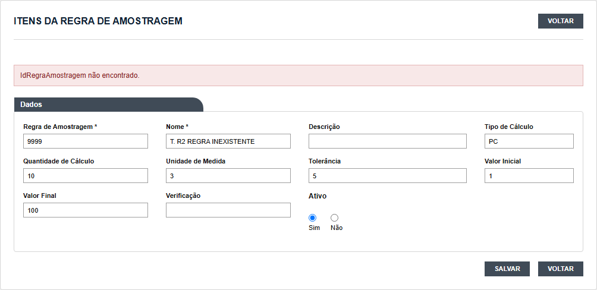
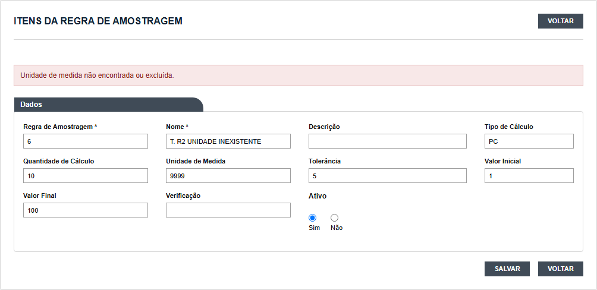
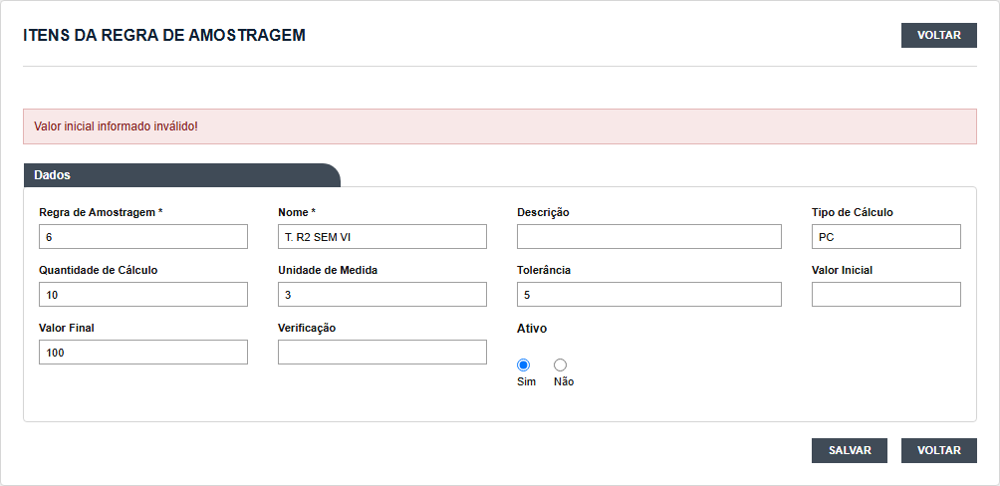
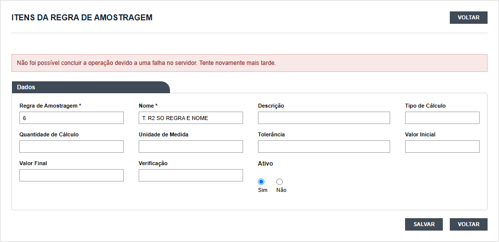
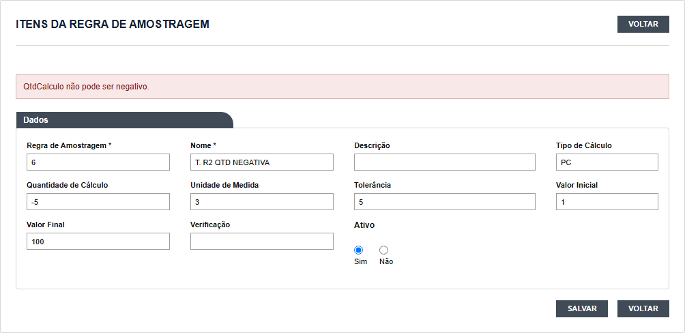
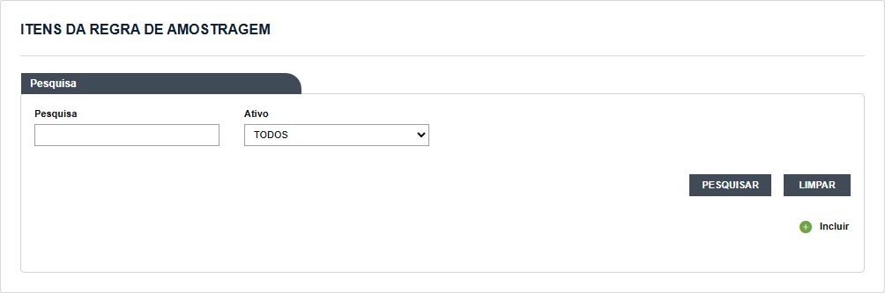
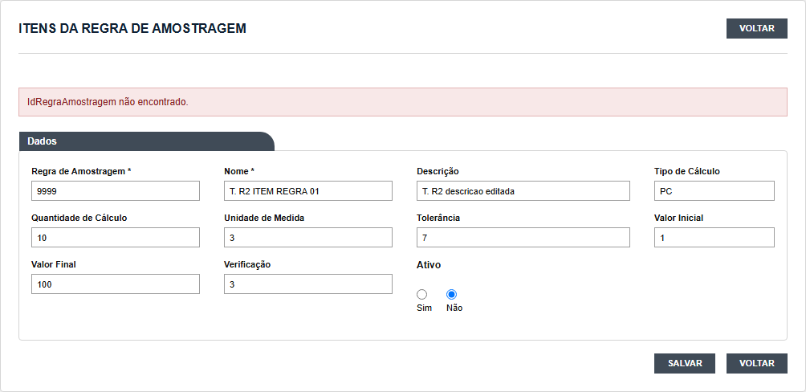
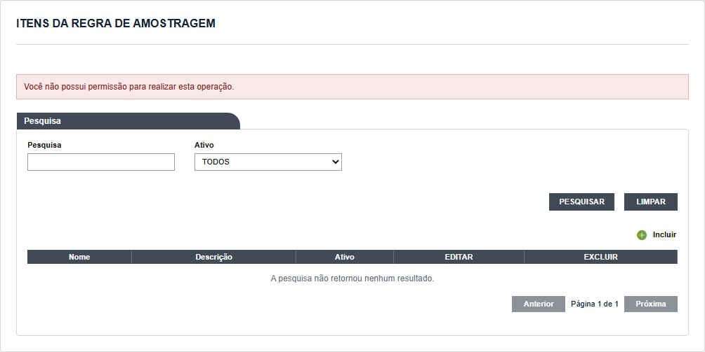
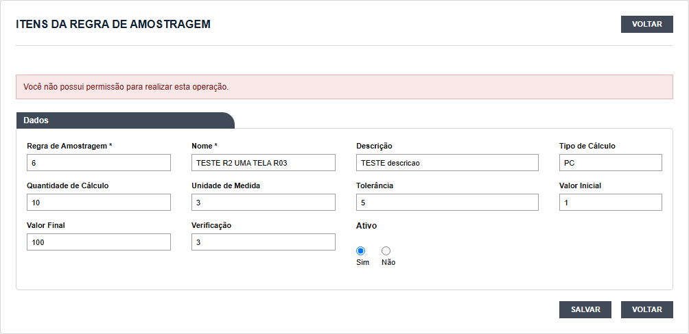

O que acontece ao confirmar ou salvar
- Incluir: grava o item e volta aos filtros, sem mensagem.
- Editar: grava (item incluído aqui) e volta aos filtros, sem mensagem. Item criado pela tela Regra Amostragem: recusado por falta de Valor Inicial e Valor Final.
- Excluir: pede só a confirmação; sem justificativa. (Na tela Regra Amostragem a exclusão pede justificativa.)
- Trilha: não há histórico (DV-CQ-N-003).
O que o sistema recusa
| Situação | Mensagem ou resultado | Observação |
|---|---|---|
| Salvar com tudo vazio, sem Regra ou sem Nome | Nada: sem mensagem e sem chamada ao servidor | DV-CQ-N-003 |
| Valor Inicial vazio, zero ou negativo | "Valor inicial informado inválido!" (faixa rosa) | Exigido e maior que zero, sem asterisco |
| Valor Final vazio | "Valor final informado inválido!" | Também exigido, sem asterisco |
| Valor Inicial maior que o Final (50 e 10) | "Valor inicial deve ser menor que valor final!" | Igual (10 e 10) é aceito: DV-CQ-N-025 |
| Quantidade de Cálculo negativa | "QtdCalculo não pode ser negativo." | Nome técnico do campo: DV-CQ-N-025 |
| Tolerância negativa | "Tolerancia não pode ser negativo." | Nome técnico do campo: DV-CQ-N-025. Tolerância 150 é gravada (DV-CQ-N-015) |
| Tipo de Cálculo vazio (ou só Regra e Nome) | "Não foi possível concluir a operação devido a uma falha no servidor. Tente novamente mais tarde." (erro interno, resposta 500) | DV-CQ-N-023 |
| Regra de Amostragem inexistente (9999), também ao editar | "IdRegraAmostragem não encontrado." | Regra 0: "IdRegraAmostragem obrigatório." |
| Unidade de Medida inexistente (9999 ou 0) | "Unidade de medida não encontrada ou excluída." | |
| Verificação inexistente (9999) | "Verificação não encontrada ou excluída." | O número é o id interno do checklist, não o Código |
| Incluir o mesmo item duas vezes | Aceita (dois registros) | DV-CQ-N-003 |
Imagens das recusas:







Cada imagem mostra o resultado do caso do nome (regra 9999; unidade 9999; verificação 9999; Valor Inicial vazio; só Regra e Nome; 50 e 10; quantidade negativa; tolerância 150; edição com regra 9999).
Campos da tela
| Campo | Tipo | Tamanho | Obrigatório | Valores e regra | Observação |
|---|---|---|---|---|---|
| Regra de Amostragem | Caixa de número | Não informado | Sim (asterisco) | Número da regra; no teste, 6 | Digitado à mão; número inexistente: "IdRegraAmostragem não encontrado." Pode ser trocado na edição |
| Nome | Texto | 100 | Sim (asterisco) | Nome do item da regra | A busca da lista procura só por este campo |
| Descrição | Texto | 255 | Não | Texto livre | |
| Tipo de Cálculo | Texto | 2 | Sim, na prática (sem asterisco; vazio dá erro interno) | PC (percentual) ou VA (valor absoluto), como a Regra Amostragem grava | Campo livre, não é lista |
| Quantidade de Cálculo | Caixa de número | Não informado | Não (sem asterisco) | Não negativa; decimal (2,5) aceito; vazia grava | A caixa não deixa digitar letras |
| Unidade de Medida | Caixa de número | Não informado | Não (sem asterisco) | Número da unidade; inexistente é recusada; vazia grava | Digitado à mão |
| Tolerância | Caixa de número | Não informado | Não (sem asterisco) | Não negativa; 150 é aceita (DV-CQ-N-015); vazia grava | |
| Valor Inicial | Caixa de número | Não informado | Sim (sem asterisco) | Maior que zero; deve ser menor que o Final | Significado: Ponto para validar |
| Valor Final | Caixa de número | Não informado | Sim (sem asterisco) | Maior que o Inicial (igual é aceito, DV-CQ-N-025) | Significado: Ponto para validar |
| Verificação | Caixa de número | Não informado | Não (sem asterisco) | Número (id interno) do checklist; inexistente é recusada; vazia grava | Digitado à mão |
| Ativo | Opção Sim / Não | — | Não | Sim (padrão) |
Filtro (quadro Pesquisa):
| Campo | Tipo | Obrigatório | Valores e regra | Observação |
|---|---|---|---|---|
| Pesquisa | Texto livre | Não | Procura só pelo Nome | Parte do nome acha |
| Ativo | Lista | Não | TODOS (padrão), SIM, NÃO | NÃO mostra só os inativos |
Quem pode usar (permissões)
- Contas usadas nos testes: a rodada 1 e a conferência de 17/11/2026 usaram a conta de administrador de teste, que abre e usa todas as funções da tela. Em 18/11/2026 a rodada de perfil restrito acrescentou duas contas de teste, uma sem acesso ao CQ e outra só de consulta (abaixo); a rodada "perfil uma tela" do mesmo dia acrescentou duas contas com permissão em uma só tela do CQ (também abaixo). Não há quadro de quem pode (
quem-pode.csv) para o CQ novo. - Perfil sem acesso ao CQ (conta T.R2CQ01, perfil T. R2 CQ SEM ACESSO, nenhuma função do CQ; 18/11/2026): O menu não mostra nenhum item do CQ. Pela rota a tela abre inteira com o botão Incluir visível; a lista vem vazia com a faixa "Você não possui permissão para realizar esta operação." e, abaixo, "A pesquisa não retornou nenhum resultado." (DV-CQ-N-030). A API recusa tudo com 403 ("Acesso negado ao módulo."): lista, POST, PUT e DELETE; sem rota de histórico nem de relatório (404).
- Perfil de consulta (conta T.R2CQ02, perfil T. R2 CQ CONSULTA: tela marcada com CONSULTAR LOG e IMPRIMIR / EXCEL, sem INCLUIR, ALTERAR e EXCLUIR; 18/11/2026): A tela não está no menu da conta e não tem função na árvore do Perfil (DV-CQ-N-033), mas ela abre e lista (14 linhas) com Incluir, Editar e Excluir ativos (DV-CQ-N-032): quem tem alguma função do CQ enxerga o cadastro mesmo sem permissão para ele. Pela API: leitura 200; POST, PUT e DELETE recusados com 403; sem rota de histórico nem de relatório (404). A gravação pelo formulário não foi tentada nesta tela.
- Sem login, a leitura e a gravação pelo servidor respondem 401 (recusadas).
- Quem deveria poder usar: Ponto para validar com a Garantia da Qualidade.
- Contas de uma tela só (T.R2CQ03, perfil T. R2 CQ UMA TELA, com Incluir, Alterar e Excluir só em Unidade de Medida; T.R2CQ04, perfil T. R2 CQ UMA TELA AMOSTRAGEM, só em Verificação de Amostragens; 18/11/2026): nenhuma das duas lê nem grava esta tela. Ela abre inteira, com o botão Incluir visível e o formulário utilizável até o SALVAR, mas a lista vem vazia com a faixa "Você não possui permissão para realizar esta operação." (GET 403) e, ao SALVAR, a mesma faixa (POST 403). Alterar e Excluir só foram testados pela API (PUT e DELETE 403), porque a lista vazia não tem linha para clicar. O administrador grava (POST 201). Alcance da DV-CQ-N-033, medido: só leitura, e apenas para quem já tem funções de várias telas do CQ (como a conta de consulta); uma conta com Incluir em uma só tela do CQ não grava nesta tela.
- Ponto para validar (qual função libera esta tela): não se sabe qual função da árvore do Perfil libera a leitura desta tela (o conjunto das cinco pastas libera; uma tela sozinha, não). Ver DV-CQ-N-033 e DV-CQ-N-035.

A imagem mostra a tela com a conta sem acesso: faixa de recusa, o botão Incluir visível (marcado) e a lista vazia com "A pesquisa não retornou nenhum resultado.".

A imagem mostra a lista com 14 linhas e os ícones de editar e excluir ativos, numa tela que não está no menu nem na árvore do Perfil.

A imagem mostra a conta T.R2CQ03 depois de SALVAR em Itens da Regra de Amostragem: a faixa "Você não possui permissão para realizar esta operação." e o formulário ainda na tela.

A imagem mostra a conta T.R2CQ04 depois de SALVAR em Itens da Regra de Amostragem: a mesma faixa de recusa.
A imagem mostra o administrador depois de SALVAR (POST 201): a tela volta aos filtros, sem mensagem de sucesso (DV-CQ-N-002).